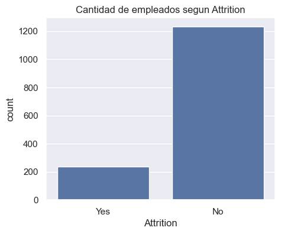
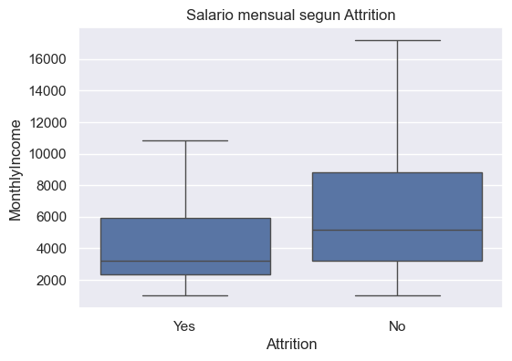
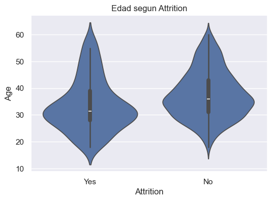
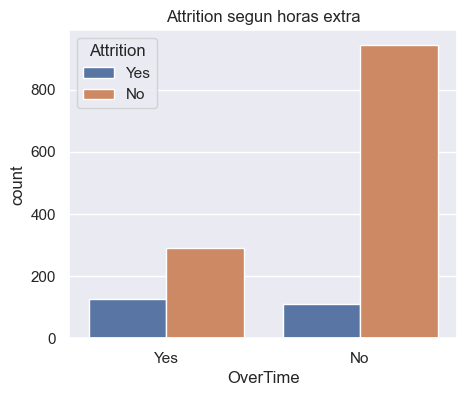
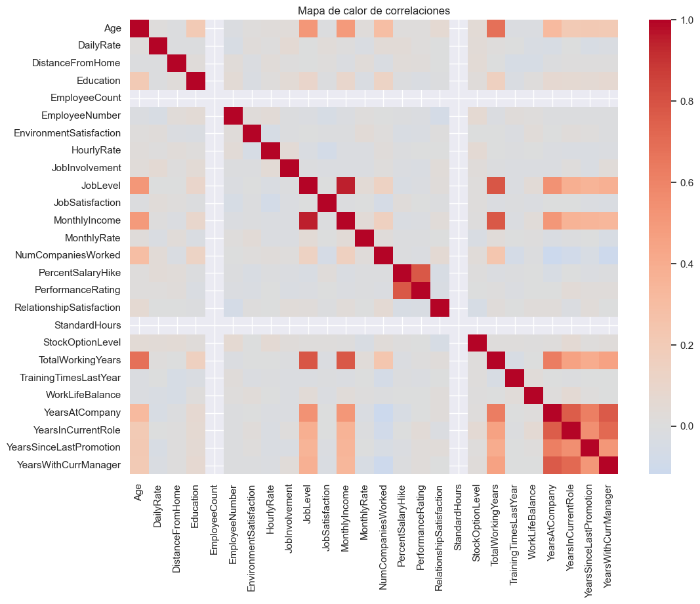
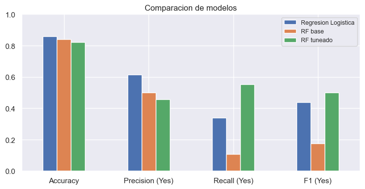
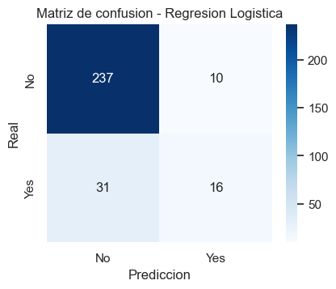
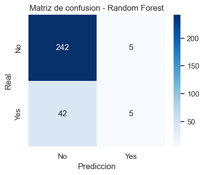
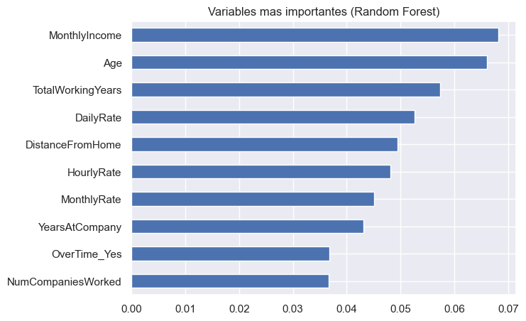

ROTACIÓN
DE PERSONAL
Predecir qué empleados dejan la empresa con un modelo de clasificación, sobre el dataset IBM HR Analytics.
## El problema y los datos
Queremos anticipar si un empleado va a renunciar (columna Attrition: Yes se fue / No se quedó). Como hay histórico con la respuesta, es clasificación supervisada: comparamos un modelo simple (Regresión Logística) contra uno más potente (Random Forest).
1470 empleados y 35 columnas (edad, sueldo, puesto, antigüedad, satisfacción…). Tres tenían datos faltantes:
## Distribución de Attrition
Qué muestra: La gran mayoría se queda (No) y solo el 16% se va. El dataset está desbalanceado: por eso después no miramos solo el accuracy.

## Salario y rotación
Lectura: quienes se van (Yes) tienen sueldos más bajos: su caja queda por debajo.

## Edad y rotación
El violín muestra la forma de la distribución en cada grupo.
Lectura: quienes se van se concentran en edades más jóvenes, cerca de los 30.

## Horas extra
Los empleados que hacen OverTime se van bastante más seguido.

## Correlaciones
Ayuda a ver qué variables numéricas se mueven juntas. Antigüedad, experiencia y sueldo aparecen relacionados.
Igual, correlación no es causalidad.

## Preparación y modelos
- 0 duplicados, edades 18–60, Attrition OK
- eliminar columnas constantes y legajo
- Attrition → 0/1 · one-hot (drop_first)
- split 80/20 con stratify
LogReg: simple e interpretable. Random Forest: muchos árboles que votan, capta relaciones más complejas.
## Comparación de modelos
La métrica más importante es el recall de Yes: de los que realmente se fueron, cuántos detectamos.

## Matrices de confusión
Lectura: el bosque acierta más casos totales, pero casi siempre predice No. La logística detecta más renuncias reales.


## Variables importantes
Qué variables usa más el bosque para separar casos: sueldo, edad, años trabajados, distancia y horas extra.

## Conclusión
La Regresión Logística fue mejor en todas las métricas, y sobre todo en el recall de la clase Yes, que es la que importa para anticipar renuncias.
Ningún modelo los detecta perfecto: hay pocos casos Yes (desbalance). Sirve como primera aproximación para señalar empleados en riesgo.
Hecho con criterio:
- validé los datos: 0 duplicados, edades 18–60, categorías OK
- imputé con la mediana del train, sin filtrar el test
- split estratificado + random_state fijo → reproducible